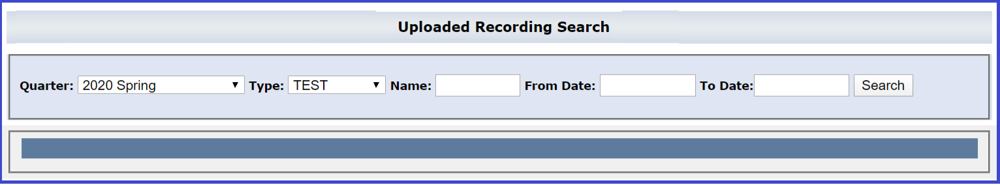
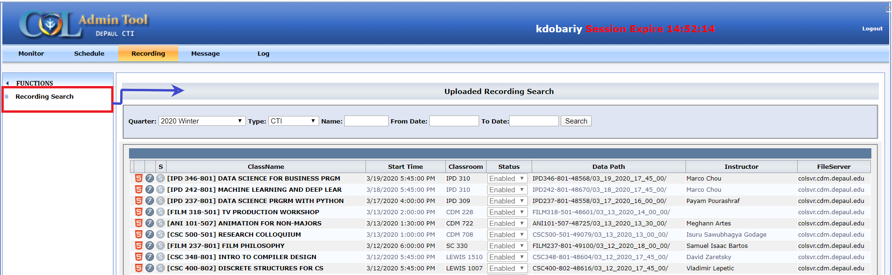
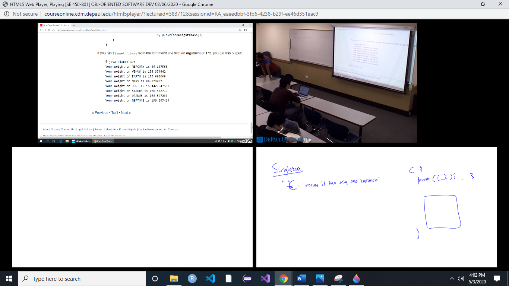

To search the uploaded recordings

-
► Quarter: List of the quarters
-
► Type: Search by Class Type. TEST, SEMINAR or CTI
- TEST: These are recordings internal to the RA website and only
accessible to authorized RA users. The COL staff uses the TEST group
when carrying out daily maintenance recordings
- SEMINAR: These are non-encrypted recordings. Once they upload, their
playback link can be retrieved from the RA website and provided to the
requestor. Since these are not encrypted, they can be universally
distributed and played by anyone.
- CTI: These are regular CDM lecture recordings. They are encrypted by
course and become automatically available to students and instructor
of that course immediately after uploading to the server.
-
► Name: Enter the Name of the Course or the Course Number to search its
recordings.
-
► From Date: Search recording starting from this date.
-
► To Date: Search recordings until this date.
Inside Result Box

-
► Class Name: Name of the class.
-
► Start Time: Class data and Class Start Time.
-
► Classroom: Name of the building and number of the classroom.
-
► Status: Visibility of the recording on D2L.
- Enabled: Recording is visible on D2L.
- Disabled: Recording is not visible on D2L.
-
► Data Path: Location of the recorded of course on the server.
-
► Instructor: Name of the Instructor taught that class.
-
► File Server: colsvr.cdm.depaul.edu - Default Server.
❖ Player Format
-
HTML 5 PLAYER
-
ADOBE FLASH PLAYER

HTML 5 Player